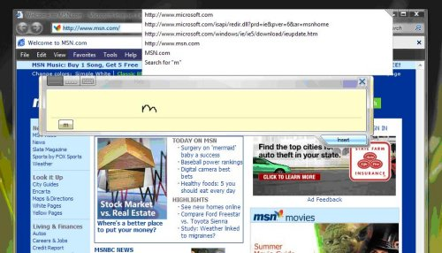
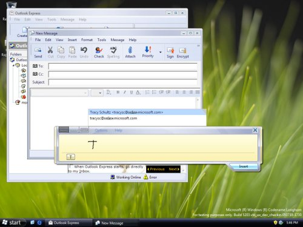

In Windows Vista, Tablet PC Input Panel integrates new Autocomplete capabilities that enable an application's Autocomplete list to update in real time as a user's ink is recognized in Input Panel. Additionally, the application's Autocomplete list is positioned in a convenient location for users of Input Panel. Without Input Panel Autocomplete, using Autocomplete features with Input Panel is a difficult process, requiring users to insert one character at a time and move Input Panel in order to access Autocomplete suggestions. With integration, Autocomplete is a powerful tool for Tablet PC users that speeds up and increases the ease of entering text with Input Panel.

There are three options for how an application can take advantage of Input Panel Autocomplete integration. Applications that contain Autocomplete functionality built using Shell Autocomplete (through the IAutoComplete interface) or .NET Framework Autocomplete (through the AutoCompleteMode Enumeration) receive Input Panel Autocomplete integration without the need for code changes. Applications that include custom Autocomplete text fields can use the Input Panel Autocomplete API to get the same functionality.
In all cases, you can make these modifications to the application's Autocomplete list without duplicating or modifying the UI or prediction logic used by an application to generate an Autocomplete list. The Autocomplete list continues to be owner drawn by the application and the contents of the Autocomplete list are the same as if the text were typed directly into the edit field.
Input Panel Autocomplete integration is supported on the Windows Vista operating system or later versions. Input Panel Autocomplete integration is built into Shell Autocomplete starting with Windows Vista and into Windows Forms development starting with .NET Framework version 3.0. While IAutoComplete and AutoCompleteMode both run on earlier versions of Windows, Input Panel Autocomplete integration is not supported on Microsoft Windows XP Tablet PC Edition or earlier operating systems. If you run Input Panel Autocomplete on earlier versions of Tablet PC, applications revert to the pre-integration behavior.
Integration of an application's Autocomplete list enables the maximum ease and speed of input for users who are entering text into a text field that includes Autocomplete functionality. Furthermore, an application that includes Input Panel Autocomplete integration immediately appears as if it were developed with the Tablet PC in mind, making the application more appealing to Tablet PC users.
Using Input Panel to enter text into a text field that includes an Autocomplete list but that is not integrated with Input Panel:
This is clearly a cumbersome process. The user's expectations of how an Autocomplete list should work are dashed, and their ability to perform tasks suffers.
Using Input Panel to enter text into a text field that includes an Autocomplete list that is integrated with Input Panel:
Due to the integration, the Autocomplete list appears and updates while the user is writing in Input Panel. Additionally, the list is positioned so that it is both convenient for the user to access while writing and not obscured by Input Panel. Lastly, when the user selects an item from an Autocomplete list the item is inserted directly into the application's text entry field, thus enabling the user to bypass the step of inserting text from Input Panel.

Both IAutoComplete and AutoCompleteMode include built-in integration of Input Panel Autocomplete. Applications using either of these standard Autocomplete components can take advantage of Input Panel Autocomplete functionality with little to no additional work. Additionally, while Input Panel Autocomplete is only supported on Windows Vista or new versions of the Windows operating system, applications that were built using IAutoComplete prior to the release of Windows Vista get Input Panel Autocomplete integration automatically when run on Windows Vista. The following sections contain more information about the specific IAutoComplete and AutoCompleteMode elements that include Input Panel Autocomplete integration.
Applications that use IAutoComplete get Input Panel Autocomplete integration for free. While the Shell Autocomplete APIs are included in Windows 2000 onward, Input Panel Autocomplete integration is only support on Windows Vista and newer versions. However, applications built prior to the release of Windows Vista that use IAutoComplete automatically get Input Panel Autocomplete integration when run on Windows Vista.
In order to take advantage of Tablet Autocomplete in this way, you must use the autocomplete object (CLSID_Autocomplete). If you wish to provide autocomplete functionality for URLs or file names, use the SHAutoComplete function to create the autocomplete object.
In addition to IAutoComplete, you can implement IAutoComplete2 or IAutoCompleteDropDowns directly and still get Input Panel Autocomplete integration automatically.
Starting in .NET Framework 3.0, Windows Forms textboxes include Autocomplete. Windows Forms textbox Autocomplete is built on top of Shell Autocomplete, which means Input Panel Autocomplete integration is built in, too. .NET Framework 3.0 is supported down level on Windows editions released prior to Windows Vista. However, because Input Panel Autocomplete integration is only supported on Windows Vista or later versions, Input Panel Autocomplete integration only works in a .NET Framework 3.0 application when it is installed on Windows Vista or later versions.
Applications wishing to take advantage of Input Panel Autocomplete integration in .NET Framework 3.0 must use a Windows Forms TextBox with the AutoCompleteMode property enabled. You need not do any additional work beyond getting Windows Forms Autocomplete to work to take advantage of Input Panel Autocomplete integration.
Developers of custom Autocomplete textboxes need to work with the Input Panel Autocomplete APIs directly in order to get the improved text input experience that Input Panel Autocomplete integration enables in their applications. The Input Panel Autocomplete APIs are included as part of the Windows Vista operating system and as part of the Tablet Platform SDK version 1.9 or later. The Input Panel Autocomplete interfaces are COM-based interfaces.
The following section describes working these interfaces in detail for a C++ application. However, these COM interfaces can be implemented in most languages, including C#, through the use of COM Interop.
In order to implement Input Panel Autocomplete integration in a custom Autocomplete text box, the two required interfaces are the ITipAutocompleteProvider Interface and the ITipAutocompleteClient Interface. The definitions for these interfaces are found in TipAutoComplete.h and TipAutoComplete_i.c.
First, an application must define and instantiate an Autocomplete provider class, which implements ITipAutocompleteProvider for each text entry field that includes an Autocomplete list. This class manages the application's side of the Autocomplete integration. All Autocomplete requests from Input Panel are made from the Autocomplete client to the application via the application's Autocomplete provider. The application's Autocomplete provider must have access to both the HWND for the application's Autocomplete list and the HWIND for the associated text entry field. Additionally, the following methods of ITipAutocompleteProvider must be implemented:
ITipAutocompleteProvider::UpdatePendingText Method: This method is used by the Autocomplete client to notify the application of the text a user has written into Input Panel. Upon receiving this notification, the provider is responsible for generating an Autocomplete list as if the text had been typed into the application's text entry field. The string pass to the Autocomplete provider by means of ITipAutocompleteProvider::UpdatePendingText Method only includes the text currently in Input Panel. Therefore, if there is additional text in the text entry field, it is the responsibility of the provider to properly append it to the text sent by the client. The string pass by ITipAutocompleteProvider::UpdatePendingText Method should be treated as a replacement for the current selection in the field. If there is no current selection, it should be placed at the position of the current insertion point. Once the Autocomplete list is generated, the provider should call the ITipAutocompleteProvider::Show Method passing in TRUE to display the Autocomplete list. The application should not cache calls to UpdatePendingText but rather treat each additional call to UpdatePendingText as a cancellation of the previous call to avoid flashing an out-of-date Autocomplete list UI.The following example code illustrates these practices.
HRESULT SampleProvider::UpdatePendingText(BSTR bstrPendingText)
{
//Discard previously cached pending text from Input Panel
m_bstrPending.Empty();
//Store the new pending text from Input Panel as m_bstrPending
m_bstrPending = bstrPendingText;
//Get the text from the field in two chunks. The characters to
//the left of the selection and the characters to the right.
CComBSTR bstrLeftContext = //Text to the left of the selection
CComBSTR bstrRightContext = //Text to the right of the selection
//Discard previously cached complete text
m_bstrCompleteText.Empty();
//Append to the field text from the left of the selection
//the text from Input Panel and then append to that
//the field text to the right of the selection
m_bstrCompleteText.Append(bstrLeftContext);
m_bstrCompleteText.Append(m_bstrPending);
m_bstrCompleteText.Append(bstrRigtContext);
//Update the app's AC list based on m_bstrCompleteText
//...
//Show the updated AC list by calling the provider's Show method
Show(true);
return S_OK;
}
ITipAutocompleteProvider::Show Method: This method is called from UpdatePendingText, but also can be called by the Autocomplete client at anytime. Upon receiving this call, the Autocomplete provider must hide or show the Autocomplete provider as indicated by the parameter. Prior to showing the Autocomplete list the Autocomplete provider is expected to consult the Autocomplete client about where to position the Autocomplete list. More information about positioning the Autocomplete list appears later in this article.
Next, the application should use the Active Template Library (ATL) CoCreateInstance function to produce an instance of the ITipAutocompleteClient Interface with class id CLSID_TipAutoCompleteClient as an in-process server, and then register the provider with the client. The Autocomplete client ITipAutocompleteClient::AdviseProvider Method registers the provider with the client to enable the client to call the application's Autocomplete provider object. If tiptsf.dll is not present on the system, the CoCreateInstance function fails and returns REGDB_E_CLASSNOTREG. At this point the application can discard its ITipAutocompleteProvider object and proceed as if Input Panel does not exist, because it does not on such a system.
The application can choose to create one instance of ITipAutocompleteClient or one instance per text field. The first option requires the provider to be unregistered and registered each time the focus is changed. More information about unregistering the Autocomplete provider appears later in this topic.
There are several steps involved in positioning the Autocomplete list that must be coordinated between the Autocomplete provider (application) and the Autocomplete client (Input Panel). Before the Autocomplete list is shown, either as a result of a call to the Autocomplete provider's Show method or due to the user entering text using the keyboard, the provider is required to consult the client about where to position the Autocomplete list. The provider should take the following steps:
Use the Autocomplete client's ITipAutocompleteClient::RequestShowUI Method to determine whether Input Panel is ready to have the Autocomplete list shown. RequestShowUI takes the HWND parameter that is the HWND for the Autocomplete list window, and the method returns TRUE or FALSE to indicate if it is the state in which the Autocomplete list can be shown. If the client returns FALSE, the provider should not attempt to show the Autocomplete list.
Call RequestShowUI to set the popup Autocomplete list window handle before you call the ITipAutocompleteClient::PreferredRects Method. Failure to do so will cause an E_INVALIDARG error when calling PreferredRects.
If RequestShowUI returns TRUE, the provider should calculate the default screen coordinate rectangle of the Autocomplete list based on the location of the text entry field, and then call the Autocomplete client's ITipAutocompleteClient::PreferredRects Method. This allows the Autocomplete client to adjust the rectangle to avoid the Autocomplete list overlapping with Input Panel. The PreferredRects method takes four parameters:
Use the return values of the prcModifiedACList and pfShowAbove out arguments to position and show the Autocomplete list window. If Input Panel is not in use, RequestShowUI always returns TRUE and prcModifiedACList is always the same as rcACList. pfShowAbove is also unchanged, the result being that the calls have no affect on the application behavior. The following example code illustrates these practices.
HRESULT SampleProvider::Show(BOOL fShow)
{
//Ask the AC client if it is OK to show the Autocomplete list.
BOOL fAllowShowing = FALSE;
m_spACClient->RequestShowUI(m_hWndList, &fAllowShowing);
if (fShow && fAllowingShowing)
{
// Create the parameters required to call PreferredRects
RECT rcField = //Rectangle for app's text field
RECT rcACList = //Default rectangle for app's AC list
RECT rcModifiedACList = {0, 0, 0, 0};
BOOL fShowAbove = TRUE;
//Ask the AC client to modify the position of the AC list
m_spACClient->PreferredRects(&rcACList, &rcField,
&rcModifiedACList, &fShowAbove);
//Show the Autocomplete UI at the modified preferred rectangle
//from rcModifiedACList and the directional info provide by
//fShowAbove
//...
}
else
{
//Hide the Autocomplete list and clean up
//...
}
return S_OK;
}
When the user selects an item in the Autocomplete list, the provider needs to call the client's ITipAutocompleteClient::UserSelection Method in addition to inserting the selected item text into the text entry field. Input Panel uses this notification to discard all remaining text that has not yet been inserted from Input Panel.
Finally, when the provider is no longer necessary, the provider should be unlinked from the Autocomplete client by calling the Autocomplete client's ITipAutocompleteClient::UnadviseProvider Method to unregister the provider. The provider may need to be unregistered for one of two reasons: because the text entry field the provider is associated with has been destroyed, or because the application chooses to create only one Autocomplete client, instead of one per text entry field. In this instance the provider must be unregistered every time that focus is switched away from the text field.
Input Panel Autocomplete integration is a powerful tool for improving the user experience in Windows applications that include Autocomplete lists on Tablet PCs. Without integration, Input Panel users are required to go through a tedious process of inserting text one character at a time and repositioning Input Panel in order to use Autocomplete. With integration, Autocomplete lists appear in a convenient location as users ink in Input Panel, increasing both the speed and the ease of text entry. In applications that include Autocomplete functionality built on top of Shell Autocomplete or .NET Framework 3.0 Autocomplete, Input Panel Autocomplete integration is a free and compelling feature. Furthermore, a simple set of COM-based interfaces are provided to enable the same integrated experience for applications that choose to use custom Autocomplete controls.
Â
Â